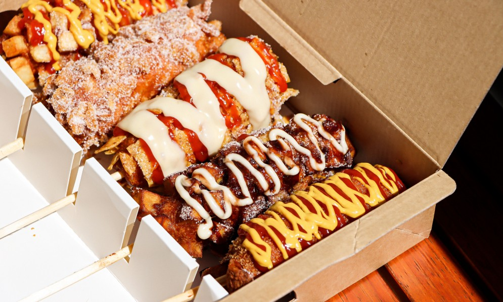

Mighty Dog

$
Original
The first Korean hotdog place has arrived people, and it's here in Auckland! Similar to the
well-known corndog, yet so much better. Mighty Dog brings to us breadier dough, the combination
of sweet and savoury, and flavour town! They offer many different options, such as the half hotdog and
half cheese, potato covered and etc. Although personally my favourite is the Original. Nothing hits better
than a nice hotdog whilst hanging out with your friends.
mightyhotdog.co.nz
47 Chancery Street, Auckland CBD, Auckland 1010
09 948 3502